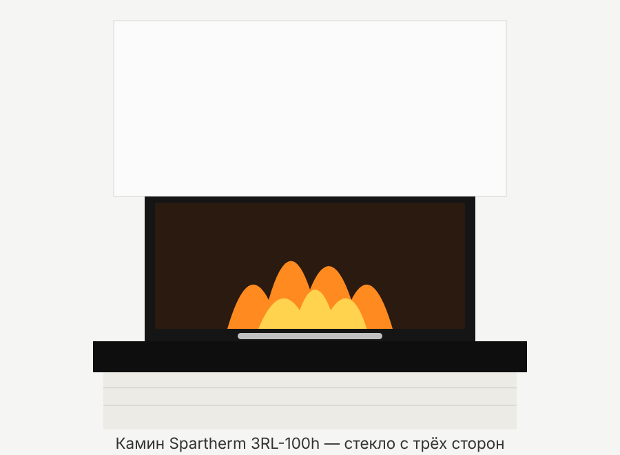
• Скорее всего: Spartherm Arte 3RL-100h (так модель называлась раньше); в нынешнем каталоге Spartherm то же исполнение продаётся как Premium A-3RL-100h. • Почему именно она: стекло с трёх сторон (фронт + обе боковые, U-образное стекло — у Spartherm это серия 3RL/«3-seitige Arte»), дверца поднимается вверх (Hubtür, «sliding-up»), ширина фронтального стекла около 100 см — это индекс «100» в названии; буква «h» = подъёмная дверь. • Похожие модели того же ряда: 3RL-60h и 3RL-80h (уже) и Arte U-50h/70h/90h (тоже U-стекло, но другие пропорции). По ширине ~100 см подходит только 3RL-100h. • Неопределённость: табличка с типом (Typenschild) не найдена, поэтому модель определена по внешнему виду. Инструкция Spartherm говорит, что типовая табличка есть на каждом аппарате (обычно за облицовкой/под топкой, у зольника или на корпусе) — если найдёте, сверьте модель и год. • Возможные варианты комплектации: 4S (дверца с 4 стёклами/рамкой), разные диаметры дымохода (200 или 250 мм), автоматика S-Thermatik NEO — на вид их не отличить.
• Топка из толстой листовой стали, внутри футеровка (шамот/термоплиты) и отражатель-дефлектор сверху. Для 3RL-100h это 9 деталей: 4 плиты пода, 4 плиты задней/боковых стенок и 1 отражатель (собираются строго по номерам). Без отражателя топить нельзя. • Дверца: подъёмная (едет вверх, противовесы спрятаны в корпусе), не самозакрывающаяся, упор — внизу. Ручка-планка внизу дверцы служит для подъёма/опускания. • Боковые стёкла и фронт образуют единый U-образный блок; для чистки внутренней стороны стекла дверца у моделей «3-сторонний Arte» дополнительно отпирается и откидывается (см. раздел «Чистка стекла»). • Регулятор воздуха: рычаг (обычно под дверцей). По общей инструкции Spartherm: вправо (+) — максимум воздуха, влево (−) — меньше воздуха, среднее положение — первичный воздух закрыт, работает вторичный (обдув стекла). Точную маркировку именно вашего рычага смотрите на месте. • Колосниковая решётка (Ascherost) и зольный ящик/чаша под ней. Решётку кладут в углубление пода надписью SPARTHERM вниз. • Подвод наружного воздуха для горения: у 3RL-моделей допускается только отдельный воздуховод, выведенный назад, патрубок Ø150 мм; по инструкции на нём обязательна заслонка (закрывать, когда камин не работает, — чтобы не выстуживать дом и не было конденсата). • Конвекция: корпус обдувается воздухом, тёплый воздух выходит через решётки в облицовке (для 3RL-100h — не менее 4 выходов Ø6"/150 мм). Решётки нельзя закрывать. • Облицовка: делается каменщиком/печником по месту из негорючих материалов; перед камином нужен негорючий пол (для 3RL по североамериканской инструкции — минимум 20"×20" ≈ 50×50 см с трёх сторон).
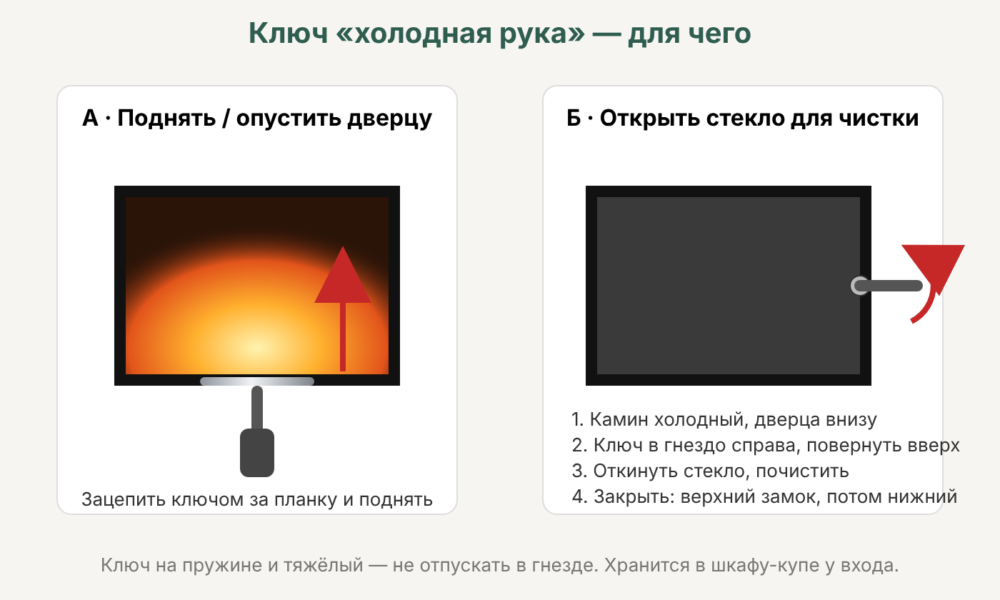
• В комплекте Spartherm идёт съёмный инструмент — в немецкой инструкции он называется «Kalte Hand» («холодная рука»), в английской — «operational tool». Это и есть ваш «ключ/ручка». • Для чего он нужен: • — подъём и опускание дверцы, не касаясь горячего металла: инструмент надевают на точку зацепления (приёмник) дверцы и тянут вверх/вниз; • — открывание и закрывание замков (верхнего и нижнего фиксаторов) дверцы, когда её нужно отпереть и откинуть для чистки стекла изнутри. У «3-стороннего Arte» инструмент ставят в приёмник/замок справа на дверце и поворачивают вверх; у угловых и круглых дверей поворачивают до упора; • — после запирания замков инструмент обязательно снимают. • Инструмент подпружинен: если отпустить, он отскакивает из гнезда. Он тяжёлый — не роняйте на пол и на ноги. • Регулятор воздуха рукой/инструментом — в инструкции об этом не сказано; рычаг обычно двигают рукой (в перчатке, он горячий). • При транспортировке противовесы стоят на транспортных фиксаторах (винт M8, ключ на 13) — их раскручивает монтажник до облицовки; хозяину это трогать не нужно.
• Только натуральная колотая древесина (поленья). Предпочтительное топливо по паспорту — колотые дрова влажностью не более 25 %. Лучше всего бук и другие твёрдые лиственные (в Финляндии — берёза отлично подходит; это не из инструкции). • Хвойные дрова смолистые: горят быстрее и сильнее «стреляют» искрами. • Тепла в 1 кг сухих дров любой породы примерно одинаково — разница в объёме (плотности). • Длина поленьев: в европейской инструкции для 3RL-100h не указана; в североамериканских документах Spartherm для Arte 3RL-100h: «идеальная длина» 18" (≈46 см) в буклете и 20" (≈50 см) в инструкции. На практике ~33–50 см, чтобы полено свободно лежало поперёк топки. • Закладка: не закладывать надолго больше рекомендуемого количества (таблица кг/ч в инструкции; для 3RL-100h по сев.-ам. буклету расход 2,4–4,4 кг/ч, т.е. 5,3–9,7 lb/h). • Камин — для периодической топки («Zeitbrand»), не для длительного тления на ночь. • Нельзя жечь: сырые (свежие) дрова, окрашенную/пропитанную/клеёную древесину, ДСП, уголь и древесный уголь (если не разрешено отдельно), картон и цветную бумагу, мусор, пластик, растворители. • Нельзя разжигать или «оживлять» огонь бензином, керосином, спиртом, маслом, жидкостью для розжига — опасность хлопка/вспышки. Бумагу для розжига инструкция тоже не рекомендует (быстро сгорает, разносит золу) — лучше твёрдые таблетки/жгуты для розжига.
• Проверить, что в топке нет упаковки, инструкций, принадлежностей; футеровка и отражатель стоят на месте. • Первые растопки — небольшим количеством дров, аппарат прогревают постепенно. • Краска корпуса «прокаливается»: появляется запах и дымок. Хорошо проветривайте помещение, детей и животных лучше увести. • Пока краска сохнет, дверцу каждые 5–10 минут ненадолго приоткрывают, чтобы уплотнитель не прилип к свежей краске. • Сев.-ам. инструкция советует первые ~2 недели топить примерно по часу на растопку, чтобы выгнать влагу из футеровки и облицовки. • Проверьте, что дверца ходит свободно и плавно (противовесы разблокированы).
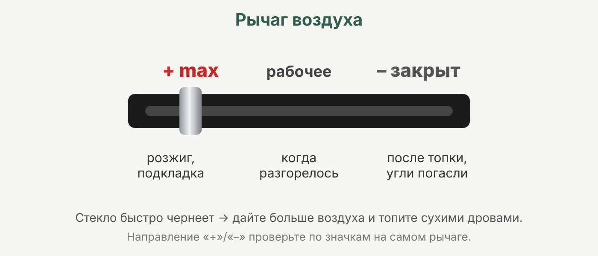
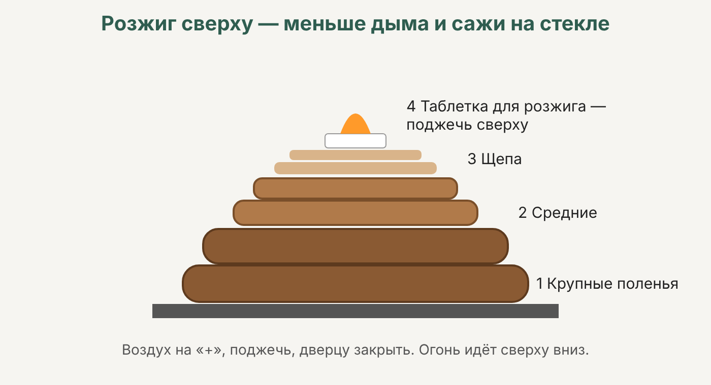
• Перед открыванием дверцы откройте воздух (рычаг в «+») и заслонку наружного воздуха, если она есть. • Очистите решётку и зольник, если золы много (тонкий слой золы на поду допустим). • Поднимите дверцу инструментом или за ручку. • Вариант «для начинающих» по инструкции: поленья кладут крест-накрест, толстые вниз, тонкие вверх; 2–3 таблетки для розжига; поджечь спичкой. • Вариант «для профи» — верхний розжиг (oberer Abbrand): крупные поленья внизу, сверху мелкая щепа и розжиг, поджигают сверху — огонь идёт вниз, меньше дыма и сажи на стекле. Подробные шаги в доступной копии инструкции не читаются. • Как только дрова хорошо разгорелись — опустите дверцу до конца. Топить только с закрытой дверцей; открывать её только на розжиг и подкладывание. Не оставляйте огонь без присмотра при открытой дверце — полено может выпасть. • Рычаг воздуха оставьте на максимуме (+) не менее 20–30 минут, пока камин не выйдет на рабочую температуру. • Потом регулируйте: пламя слабеет — чуть приоткрыть (+); огонь разгорается слишком бурно — чуть прикрыть (−). Номинальный режим — примерно среднее положение (точная позиция для 3RL-100h в доступных материалах не указана). • Не перегревать: не закладывать больше нормы, не топить постоянно с полностью открытым воздухом. • Окончание: горение закончено, когда дрова полностью прогорели и нет тления. Затем рычаг — в положение «закрыто» и закрыть заслонку наружного воздуха (если есть), но только когда углей уже нет.
• Подкладывать, когда пламя почти погасло и остался слой жара (не на голые угли и не на сильный огонь). • Перед открыванием: рычаг воздуха открыть, дверцу поднимать медленно — сначала на щель, подождать пару секунд, затем выше. Так дым не пойдёт в комнату. • Положить 2–3 полена, не засыпая угли полностью; не превышать рекомендованную закладку. • Закрыть дверцу до конца; воздух на несколько минут — на максимум, пока новые поленья не схватятся, затем вернуть в рабочее положение.
• Чистить только на полностью остывшем камине. • Средство: мягкая мыльная вода или специальный очиститель для стеклокерамики, мягкая тряпка. Без абразивов, без скребков по стеклу. • Средство не должно попадать на уплотнители и окрашенные поверхности — сначала нанести на тряпку, а не распылять на стекло. • Лёгкая сажа: протереть влажной бумагой, обмакнутой в золу, затем чистой тряпкой (народный способ, в инструкции не указан). • Как открыть для чистки внутренней стороны (3-сторонний Arte, по общей инструкции Spartherm; доступная копия частично нечитаема): • 1. Опустить дверцу полностью вниз. • 2. Инструментом «Kalte Hand» открыть замки дверцы (по тексту — сначала нижний), на 3-стороннем Arte инструмент вставляется в приёмник справа. • 3. Аккуратно откинуть фронтальное стекло; боковые стёкла также откидываются и потом снова фиксируются. • 4. Почистить стёкла изнутри. • 5. Закрыть: дверцу закрывать бережно, чуть приподнимая и прижимая к неподвижному стеклу. Сначала запереть ВЕРХНИЙ замок, потом НИЖНИЙ (рукой или инструментом). Снять инструмент. • Если что-то не идёт — не силой: уточните у продавца/печника, т.к. для вашего года выпуска порядок может отличаться. • Стекло — стеклокерамика Robax 4 мм; замена только на оригинальное.
• Удалять золу только из остывшего камина. • Перед растопкой опорожнить зольник и прочистить решётку; решётку класть надписью SPARTHERM вниз. • Немного золы на поду можно оставить — она защищает под и помогает горению. • Золу высыпать в металлическое ведро с плотной крышкой, ставить на негорючую поверхность вдали от дома и стен, пока полностью не остынет (угли тлеют сутками). • Пылесосить топку обычным пылесосом нельзя (в инструкции не указано; общее правило) — только пылесосом для золы и только холодную золу.
• Уплотнители дверцы и стёкол: следить, чтобы не попадали чистящие средства; затвердевание уплотнителей считается износом. Если дверца перестала плотно прилегать или видна копоть по краю — заменить шнур (по инструкции Premium — силами специалиста). • Дымоход: чистить не реже двух раз в год и по необходимости (сев.-ам. инструкция); в Финляндии действуют местные правила обязательной чистки (nuohous) — уточняйте у трубочиста (в инструкции не указано). • Футеровка: трещины в шамоте/термоплитах — нормальный износ; заменять, только если деталь выпадает или прогорела до металла. • Отражатель (дефлектор) при чистке дымохода снимают и ставят обратно; без него не топить. • Ход дверцы: двигаться должна легко и плавно; если дверца стала тяжёлой или заедает — вызвать сервис (тросы/ролики противовесов). • Нержавеющие детали — средством для нержавейки, хромированные и позолоченные — не полировать. • Ежегодно рекомендован осмотр камина и дымохода специалистом (печник/трубочист). • Решётки конвекции и подвод наружного воздуха держать открытыми и чистыми; на входе воздуховода — сетка.
• Стекло, дверца, ручка и облицовка очень горячие — работать в перчатках, использовать инструмент. • Топить только с закрытой дверцей; не хлопать дверцей и не снимать её на горячем камине. • Перед топкой: ничего горючего ближе ~80–85 см перед стеклом и сбоку (европейская инструкция Premium для подобных моделей; для 3RL-100h сев.-ам. инструкция требует 48" ≈ 122 см спереди). Точная зона для вашей установки — в документах монтажника. • Если пол горючий (паркет, ковёр) — перед камином нужна негорючая плита/камень. • Не оставлять детей без присмотра у горящего камина. • Никогда не заливать огонь водой: 10 л воды дают ~17 м³ пара — ожог и разрушение топки/стекла. • Пожар в дымоходе (гул, искры из трубы): закрыть воздух, не открывать дверцу, вызвать пожарных (112), убрать горючее от дымохода, после — проверка трубочистом. • Не вносить изменения в конструкцию и подвод воздуха. • Рекомендуется датчик дыма и угарного газа, огнетушитель поблизости (раздел 6.1 сев.-ам. инструкции).
• Дым в комнату при подкладывании → дверцу открывать медленно, сначала щелью; перед открыванием дать воздух (+); подкладывать на жар, а не на сильное пламя; проверить тягу. • Стекло быстро чернеет → сырые дрова; слишком мало воздуха (рычаг сильно прикрыт); камин не прогрет; слишком мелкое топливо или перегрузка. Топить сухими дровами, дольше держать воздух открытым, использовать верхний розжиг. • Огонь плохо разгорается / гаснет → проверить: дрова сухие (≤25 %)? заслонка наружного воздуха открыта? решётка снаружи не забита? воздуховод чистый? рычаг на «+»? Если всё да и не помогает — тяга слабая: сделать «прогревочный» огонь из бумаги/щепы, проверить дымоход у трубочиста. • Плохая тяга вообще → холодная труба (прогреть), засорение дымохода, слишком короткая труба, ветер; при плохой тяге — вызвать трубочиста/специалиста. • Дрова сгорают слишком быстро / большой расход → слишком много воздуха; мелкие или очень сухие поленья; прикрыть рычаг после прогрева. • Трещины в футеровке → нормальный износ; менять, если деталь разрушается. • Дверца не держится / тяжело ходит → вызвать сервис (противовесы, тросы, ролики). • Если меры не помогают — обращаться к продавцу или специализированной фирме. • Подробная таблица «неисправность — причина — решение» в доступных копиях не читается; пункты выше — пересказ разделов «Hilfe» и общей логики инструкции.
• Модель: Spartherm Arte 3RL-100h / Premium A-3RL-100h; топливо — дрова; стекло U-образное; дверь подъёмная, не самозакрывающаяся. • Мощность: номинальная 13,0 кВт (паспорт Premium A-3RL-100h 13,0 kW); диапазон 9,1–16,9 кВт (сайт Spartherm, Premium). Старый каталог Arte 3RL-100h: 7,7–14,3 кВт; сев.-ам. данные: 26 000–49 000 BTU/ч (≈7,6–14,4 кВт). Есть версия с автоматикой S-Thermatik NEO на 12,0 кВт. • КПД: 83 % при номинале (паспорт), сезонная эффективность 73 %; класс энергоэффективности A+ в паспорте (на сайте указан класс A). Старые данные Arte: >78 %. • Дымоход: 10" (≈250 мм) по сев.-ам. документации; у соседней модели 3RL-80h — Ø250 мм (вариант Ø200 мм). Для 3RL-100h в Европе — в доступных документах не указано. • Подвод воздуха для горения: Ø150 мм, только назад (сев.-ам. инструкция). • Вес: ≈300 кг (662 lb). • Объём топки: 5,88 куб. фута (≈167 л). • Размеры дверцы/стекла: 1000 × 550 × 450 мм (колонка «Door dimensions» сев.-ам. буклета — предположительно ширина фронта × высота × глубина боковин; не подтверждено). • Длина поленьев: 18–20" (≈46–50 см) по сев.-ам. документам. • Расход дров: 5,3–9,7 lb/ч (≈2,4–4,4 кг/ч). • Требуемая тяга: 12 Па — значение из инструкции Premium для родственных моделей и у 3RL-80h; для 3RL-100h не подтверждено. • Температура дымовых газов, массовый поток, точные расстояния до горючих материалов для 3RL-100h — в инструкции не указано (в доступных копиях).
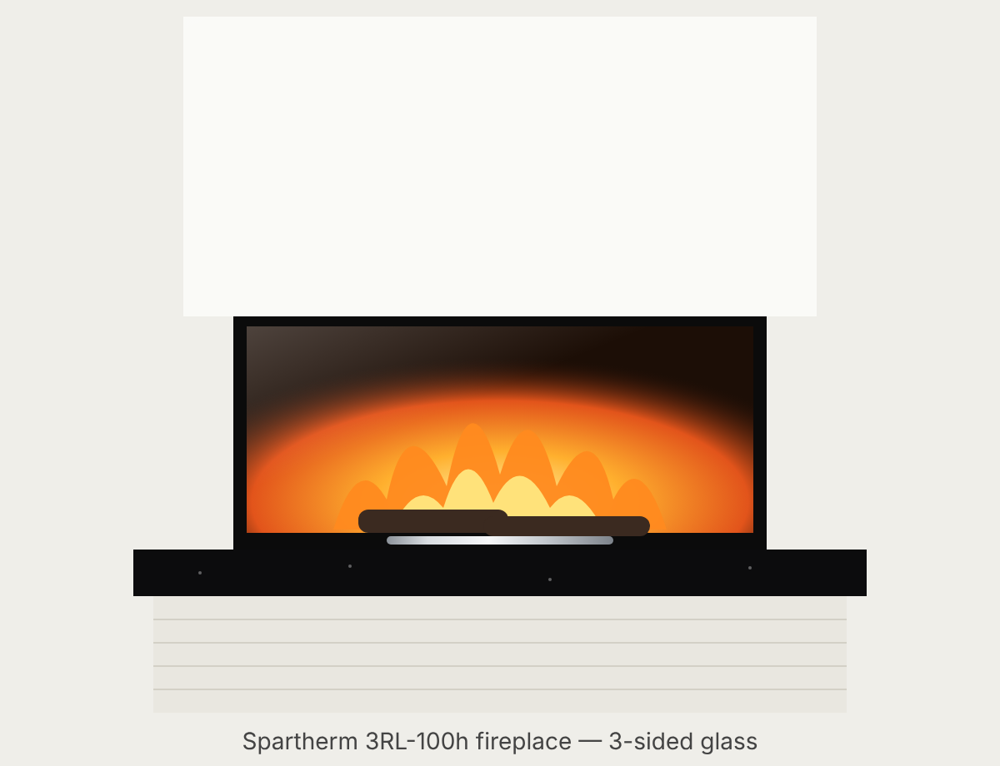
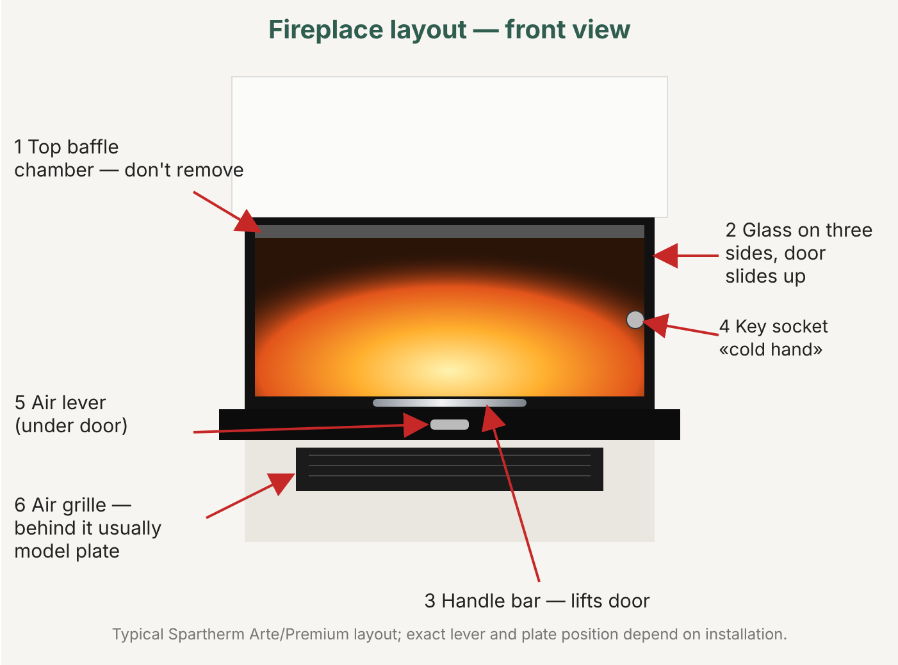
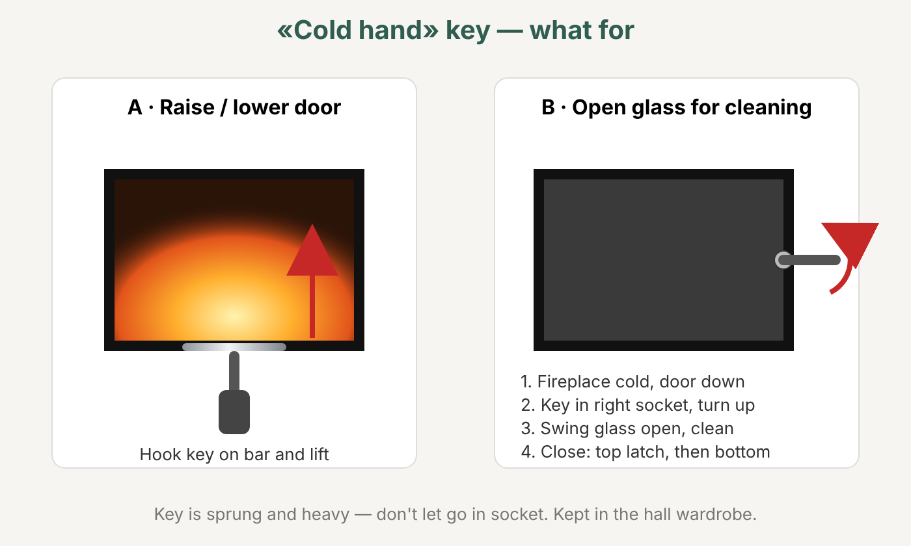
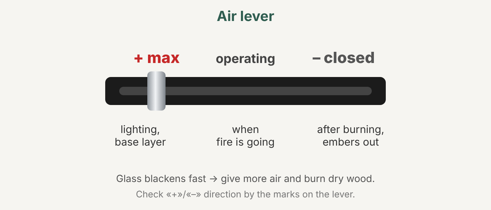
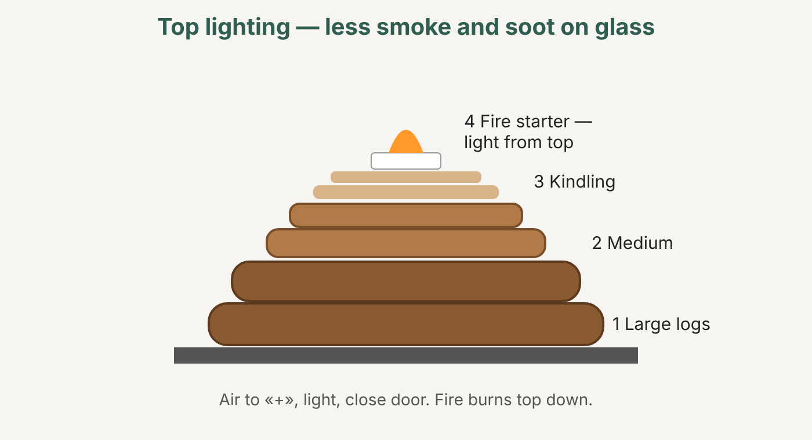
• Most likely: Spartherm Arte 3RL-100h (the model's former name); in Spartherm's current catalogue the same version is sold as Premium A-3RL-100h. • Why this one: glass on three sides (front + both sides, U-shaped glass — at Spartherm this is the 3RL series / "3-seitige Arte"), the door lifts upwards (Hubtür, "sliding-up"), the front glass is about 100 cm wide — that is the "100" in the name; the letter "h" = lift door. • Similar models in the same range: 3RL-60h and 3RL-80h (narrower) and Arte U-50h/70h/90h (also U-shaped glass, but different proportions). Only the 3RL-100h matches a width of ~100 cm. • Uncertainty: the type plate (Typenschild) has not been found, so the model was identified by its appearance. The Spartherm manual says every appliance has a type plate (usually behind the cladding/under the firebox, by the ash pan or on the casing) — if you find it, check the model and year. • Possible equipment variants: 4S (door with 4 glass panes/frame), different flue diameters (200 or 250 mm), S-Thermatik NEO automatic control — these cannot be told apart by appearance.
• Firebox made of thick sheet steel, lined inside (firebrick/insulating panels) with a baffle (deflector) at the top. For the 3RL-100h these are 9 parts: 4 floor plates, 4 back/side wall plates and 1 baffle (assembled strictly by number). Do not burn without the baffle. • Door: lift door (moves upwards, counterweights hidden in the casing), not self-closing, the stop is at the bottom. The handle bar at the bottom of the door is used for raising/lowering. • The side glass panels and the front form a single U-shaped unit; to clean the inside of the glass, the door on "3-sided Arte" models is additionally unlocked and swung open (see the "Cleaning the glass" section). • Air control: a lever (usually below the door). According to Spartherm's general manual: right (+) — maximum air, left (−) — less air, middle position — primary air closed, secondary air (glass air-wash) working. Check the exact markings on your lever on site. • Grate (Ascherost) and ash drawer/pan underneath. The grate is laid in the recess in the floor with the SPARTHERM lettering facing down. • External combustion air supply: on 3RL models only a separate duct led out to the rear is permitted, connection Ø150 mm; according to the manual it must have a damper (close it when the fireplace is not in use, so the house does not cool down and no condensation forms). • Convection: air flows around the casing, warm air comes out through grilles in the cladding (for the 3RL-100h — at least 4 outlets of Ø6"/150 mm). The grilles must not be covered. • Cladding: built on site by a mason/stove builder from non-combustible materials; a non-combustible floor is needed in front of the fireplace (for the 3RL, according to the North American manual — at least 20"×20" ≈ 50×50 cm on three sides).
• Spartherm supplies a removable tool — in the German manual it is called the "Kalte Hand" ("cold hand"), in the English one the "operational tool". This is your "key/handle". • What it is for: • — raising and lowering the door without touching hot metal: the tool is fitted onto the door's engagement point (receiver) and pulled up/down; • — opening and closing the door locks (upper and lower catches) when the door has to be unlocked and swung open to clean the glass from the inside. On the "3-sided Arte" the tool is inserted into the receiver/lock on the right of the door and turned upwards; on corner and round doors it is turned as far as it will go; • — after the locks have been closed, the tool must always be removed. • The tool is spring-loaded: if you let go, it springs out of the socket. It is heavy — do not drop it on the floor or on your feet. • Operating the air control by hand/with the tool — the manual says nothing about this; the lever is usually moved by hand (wearing a glove, it is hot). • For transport the counterweights are held by transport locks (M8 screw, 13 mm spanner) — the installer releases them before the cladding is built; the owner does not need to touch them.
• Only natural split wood (logs). The preferred fuel according to the data sheet is split firewood with a moisture content of no more than 25 %. Best are beech and other hardwoods (in Finland birch is excellent; this is not from the manual). • Softwood is resinous: it burns faster and throws more sparks. • 1 kg of dry wood of any species contains roughly the same heat — the difference is in the volume (density). • Log length: not stated in the European manual for the 3RL-100h; in Spartherm's North American documents for the Arte 3RL-100h: "ideal length" 18" (≈46 cm) in the brochure and 20" (≈50 cm) in the manual. In practice ~33–50 cm, so that the log lies freely across the firebox. • Loading: do not load more than the recommended amount for long periods (kg/h table in the manual; for the 3RL-100h the North American brochure gives a consumption of 2.4–4.4 kg/h, i.e. 5.3–9.7 lb/h). • The fireplace is for intermittent burning ("Zeitbrand"), not for smouldering overnight. • Do not burn: wet (fresh) wood, painted/treated/glued wood, chipboard, coal and charcoal (unless separately permitted), cardboard and coloured paper, rubbish, plastic, solvents. • Never light or "revive" a fire with petrol, paraffin, spirit, oil or lighter fluid — risk of a flash/deflagration. The manual does not recommend paper for lighting either (burns quickly, scatters ash) — solid firelighters/firelighter strips are better.
• Check that there is no packaging, manuals or accessories in the firebox, and that the lining and baffle are in place. • For the first fires use a small amount of wood and warm the appliance up gradually. • The casing paint "cures": there will be a smell and some smoke. Ventilate the room well; it is best to take children and pets out. • While the paint is curing, open the door briefly every 5–10 minutes so that the seal does not stick to the fresh paint. • The North American manual recommends burning for about an hour per firing for the first ~2 weeks, to drive the moisture out of the lining and cladding. • Check that the door moves freely and smoothly (counterweights unlocked).
• Before opening the door, open the air (lever to "+") and the external air damper, if there is one. • Clear the grate and ash pan if there is a lot of ash (a thin layer of ash on the floor is fine). • Raise the door with the tool or by the handle. • The "beginner" method from the manual: logs laid crosswise, thick ones at the bottom, thin ones on top; 2–3 firelighters; light with a match. • The "pro" method — top-down burning (oberer Abbrand): large logs at the bottom, small kindling and firelighter on top, lit from the top — the fire burns downwards, less smoke and less soot on the glass. The detailed steps cannot be read in the available copy of the manual. • As soon as the wood is burning well — lower the door fully. Burn only with the door closed; open it only for lighting and adding wood. Do not leave the fire unattended with the door open — a log may fall out. • Leave the air lever at maximum (+) for at least 20–30 minutes, until the fireplace reaches operating temperature. • Then adjust: the flame weakens — open slightly (+); the fire burns too fiercely — close slightly (−). Nominal operation — roughly the middle position (the exact position for the 3RL-100h is not given in the available materials). • Do not overheat: do not load more than the norm, do not burn constantly with the air fully open. • Finishing: burning is over when the wood has burnt down completely and nothing is smouldering. Then put the lever in the "closed" position and close the external air damper (if there is one), but only when there are no embers left.
• Add wood when the flames have almost died down and a bed of embers remains (not onto bare embers and not onto a fierce fire). • Before opening: open the air lever, raise the door slowly — first just a crack, wait a couple of seconds, then higher. This way smoke will not come into the room. • Put on 2–3 logs without covering the embers completely; do not exceed the recommended load. • Close the door fully; air at maximum for a few minutes until the new logs catch, then return it to the operating position.
• Clean only when the fireplace has cooled down completely. • Product: mild soapy water or a special glass-ceramic cleaner, a soft cloth. No abrasives, no scrapers on the glass. • The cleaner must not get onto the seals or painted surfaces — apply it to the cloth first rather than spraying it onto the glass. • Light soot: wipe with damp paper dipped in ash, then with a clean cloth (a traditional method, not in the manual). • How to open for cleaning the inside (3-sided Arte, according to Spartherm's general manual; the available copy is partly illegible): • 1. Lower the door all the way down. • 2. Open the door locks with the "Kalte Hand" tool (according to the text — the lower one first); on the 3-sided Arte the tool is inserted into the receiver on the right. • 3. Carefully swing the front glass open; the side glass panels also swing open and are then locked again. • 4. Clean the glass on the inside. • 5. Closing: close the door gently, lifting it slightly and pressing it against the fixed glass. Lock the UPPER lock first, then the LOWER one (by hand or with the tool). Remove the tool. • If something will not move — do not use force: ask the dealer/stove builder, as the procedure may differ for your year of manufacture. • The glass is Robax 4 mm glass-ceramic; replace only with an original part.
• Remove ash only from a cold fireplace. • Before lighting, empty the ash pan and clear the grate; lay the grate with the SPARTHERM lettering facing down. • A little ash can be left on the floor — it protects the floor and helps combustion. • Tip the ash into a metal bucket with a tight-fitting lid and stand it on a non-combustible surface away from the house and walls until it has cooled completely (embers smoulder for days). • Do not vacuum the firebox with an ordinary vacuum cleaner (not in the manual; general rule) — only with an ash vacuum and only cold ash.
• Door and glass seals: make sure cleaning products do not get on them; hardening of the seals counts as wear. If the door no longer seals tightly or there is soot along the edge — replace the rope seal (according to the Premium manual — by a specialist). • Chimney: sweep at least twice a year and as needed (North American manual); in Finland local rules on compulsory chimney sweeping (nuohous) apply — check with the chimney sweep (not in the manual). • Lining: cracks in the firebrick/insulating panels are normal wear; replace a part only if it falls out or is burnt through to the metal. • The baffle (deflector) is removed and refitted when the chimney is swept; do not burn without it. • Door movement: it should move easily and smoothly; if the door becomes heavy or sticks — call the service (counterweight cables/pulleys). • Stainless steel parts — with stainless steel cleaner; do not polish chrome-plated and gold-plated parts. • An annual inspection of the fireplace and chimney by a specialist (stove builder/chimney sweep) is recommended. • Keep the convection grilles and the external air supply open and clean; there should be a mesh at the duct inlet.
• The glass, door, handle and cladding get very hot — wear gloves and use the tool. • Burn only with the door closed; do not slam the door or remove it while the fireplace is hot. • Before burning: nothing combustible closer than ~80–85 cm in front of the glass and at the sides (European Premium manual for similar models; for the 3RL-100h the North American manual requires 48" ≈ 122 cm at the front). The exact zone for your installation is in the installer's documents. • If the floor is combustible (parquet, carpet) — a non-combustible plate/stone is needed in front of the fireplace. • Do not leave children unattended near a burning fireplace. • Never put the fire out with water: 10 l of water produce ~17 m³ of steam — scalding and damage to the firebox/glass. • Chimney fire (roaring, sparks from the chimney): close the air, do not open the door, call the fire brigade (112), move combustibles away from the chimney, and afterwards have it inspected by a chimney sweep. • Do not make any changes to the construction or the air supply. • A smoke and carbon monoxide detector and a fire extinguisher nearby are recommended (section 6.1 of the North American manual).
• Smoke comes into the room when adding wood → open the door slowly, first just a crack; give air (+) before opening; add wood onto embers, not onto a fierce flame; check the draught. • The glass blackens quickly → wet wood; too little air (lever closed too far); fireplace not warmed up; fuel too small or overloading. Burn dry wood, keep the air open longer, use top-down lighting. • The fire is slow to catch / goes out → check: is the wood dry (≤25 %)? is the external air damper open? is the outside grille not clogged? is the duct clean? is the lever on "+"? If all yes and it still doesn't help — the draught is weak: make a "warm-up" fire of paper/kindling, have the chimney checked by a chimney sweep. • Poor draught in general → cold chimney (warm it up), blocked chimney, chimney too short, wind; with poor draught — call a chimney sweep/specialist. • Wood burns too fast / high consumption → too much air; small or very dry logs; close the lever partly after warming up. • Cracks in the lining → normal wear; replace if the part is breaking up. • The door will not stay up / is heavy to move → call the service (counterweights, cables, pulleys). • If these measures do not help — contact the dealer or a specialist company. • The detailed "fault — cause — remedy" table cannot be read in the available copies; the points above are a summary of the "Hilfe" sections and the general logic of the manual.
• Model: Spartherm Arte 3RL-100h / Premium A-3RL-100h; fuel — wood; U-shaped glass; lift door, not self-closing. • Output: nominal 13.0 kW (Premium A-3RL-100h data sheet 13.0 kW); range 9.1–16.9 kW (Spartherm website, Premium). Old Arte 3RL-100h catalogue: 7.7–14.3 kW; North American data: 26,000–49,000 BTU/h (≈7.6–14.4 kW). There is a version with S-Thermatik NEO automatic control rated at 12.0 kW. • Efficiency: 83 % at nominal output (data sheet), seasonal efficiency 73 %; energy efficiency class A+ in the data sheet (class A on the website). Old Arte data: >78 %. • Flue: 10" (≈250 mm) according to the North American documentation; the neighbouring model 3RL-80h — Ø250 mm (Ø200 mm variant). For the 3RL-100h in Europe — not stated in the available documents. • Combustion air supply: Ø150 mm, to the rear only (North American manual). • Weight: ≈300 kg (662 lb). • Firebox volume: 5.88 cu ft (≈167 l). • Door/glass dimensions: 1000 × 550 × 450 mm ("Door dimensions" column of the North American brochure — presumably front width × height × side depth; not confirmed). • Log length: 18–20" (≈46–50 cm) according to the North American documents. • Wood consumption: 5.3–9.7 lb/h (≈2.4–4.4 kg/h). • Required draught: 12 Pa — value from the Premium manual for related models and for the 3RL-80h; not confirmed for the 3RL-100h. • Flue gas temperature, mass flow, exact distances to combustible materials for the 3RL-100h — not stated in the manual (in the available copies).
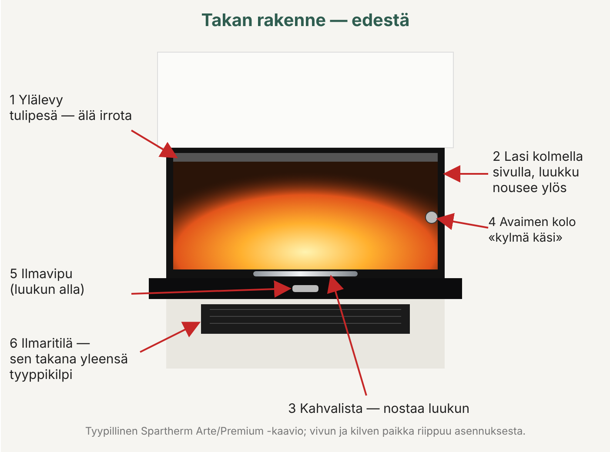
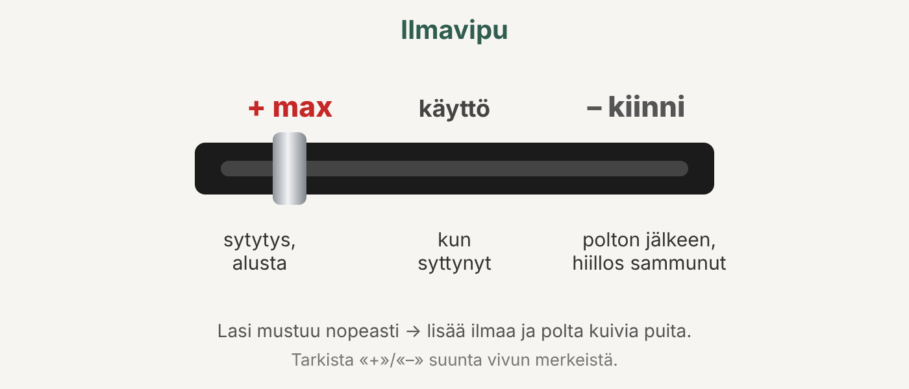
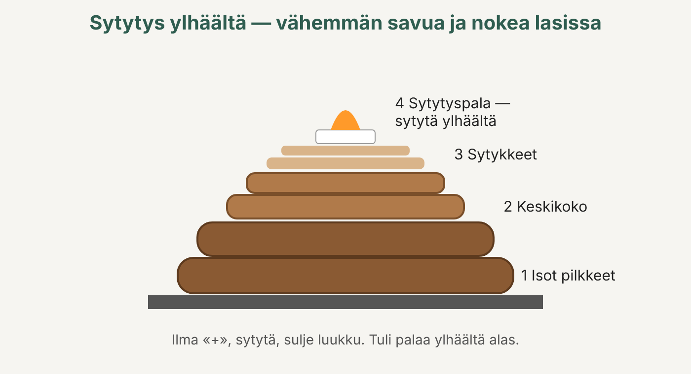
• Todennäköisimmin: Spartherm Arte 3RL-100h (mallin aiempi nimi); Sparthermin nykyisessä valikoimassa sama malli myydään nimellä Premium A-3RL-100h. • Miksi juuri tämä: lasi kolmella sivulla (etu + molemmat sivut, U-muotoinen lasi — Sparthermilla tämä on 3RL-sarja / ”3-seitige Arte”), luukku nousee ylös (Hubtür, ”sliding-up”), etulasin leveys noin 100 cm — se on nimen luku ”100”; kirjain ”h” = nostoluukku. • Saman sarjan samankaltaiset mallit: 3RL-60h ja 3RL-80h (kapeampia) sekä Arte U-50h/70h/90h (myös U-lasi, mutta eri mittasuhteet). ~100 cm:n leveyteen sopii vain 3RL-100h. • Epävarmuus: tyyppikilpeä (Typenschild) ei ole löydetty, joten malli on tunnistettu ulkonäön perusteella. Sparthermin ohjeen mukaan jokaisessa laitteessa on tyyppikilpi (yleensä verhouksen takana/tulipesän alla, tuhkalaatikon luona tai rungossa) — jos löydät sen, tarkista malli ja vuosi. • Mahdolliset varustevaihtoehdot: 4S (luukku, jossa 4 lasia/kehys), eri savuhormiliitännän halkaisijat (200 tai 250 mm), S-Thermatik NEO -automatiikka — näitä ei erota ulkonäöstä.
• Tulipesä paksusta teräslevystä, sisällä vuoraus (tulitiili/eristelevyt) ja ylhäällä ohjauslevy (deflektori). 3RL-100h:ssa osia on 9: 4 pohjalevyä, 4 taka-/sivuseinälevyä ja 1 ohjauslevy (kootaan tarkasti numerojärjestyksessä). Ilman ohjauslevyä ei saa lämmittää. • Luukku: nostoluukku (liikkuu ylös, vastapainot rungon sisällä), ei itsesulkeutuva, rajoitin alhaalla. Luukun alareunan kahvalista on nostamista/laskemista varten. • Sivulasit ja etulasi muodostavat yhtenäisen U-muotoisen kokonaisuuden; lasin sisäpinnan puhdistamista varten ”kolmisivuisen Arten” luukku lisäksi avataan lukituksesta ja käännetään auki (ks. kohta ”Lasin puhdistus”). • Ilmansäädin: vipu (yleensä luukun alapuolella). Sparthermin yleisen ohjeen mukaan: oikealle (+) — eniten ilmaa, vasemmalle (−) — vähemmän ilmaa, keskiasento — primääri-ilma kiinni, sekundääri-ilma (lasin huuhteluilma) toimii. Tarkista oman vipusi tarkat merkinnät paikan päällä. • Arina (Ascherost) ja sen alla tuhkalaatikko/-astia. Arina asetetaan pohjan syvennykseen SPARTHERM-teksti alaspäin. • Ulkoinen palamisilma: 3RL-malleissa sallitaan vain erillinen, taaksepäin johdettu ilmakanava, liitäntä Ø150 mm; ohjeen mukaan siinä on oltava pelti (suljetaan, kun takka ei ole käytössä, jotta talo ei jäähdy eikä synny kondenssia). • Konvektio: rungon ympäri kiertää ilmaa, lämmin ilma tulee ulos verhouksen ritilöistä (3RL-100h:ssa vähintään 4 poistoaukkoa Ø6"/150 mm). Ritilöitä ei saa peittää. • Verhous: muurari/tulisijamuurari tekee sen paikan päällä palamattomista materiaaleista; takan eteen tarvitaan palamaton lattia (3RL:lle Pohjois-Amerikan ohjeen mukaan vähintään 20"×20" ≈ 50×50 cm kolmelle sivulle).
• Sparthermin mukana tulee irrotettava työkalu — saksankielisessä ohjeessa sen nimi on ”Kalte Hand” (”kylmä käsi”), englanninkielisessä ”operational tool”. Tämä on sinun ”avaimesi/kahvasi”. • Mihin sitä tarvitaan: • — luukun nostamiseen ja laskemiseen koskematta kuumaan metalliin: työkalu asetetaan luukun tartuntakohtaan (vastakappaleeseen) ja vedetään ylös/alas; • — luukun lukkojen (ylä- ja alasalvan) avaamiseen ja sulkemiseen, kun luukku on avattava lukituksesta ja käännettävä auki lasin sisäpuolen puhdistamista varten. ”Kolmisivuisessa Artessa” työkalu asetetaan luukun oikealla puolella olevaan vastakappaleeseen/lukkoon ja käännetään ylöspäin; kulma- ja pyöreissä luukuissa käännetään vasteeseen asti; • — kun lukot on suljettu, työkalu on aina irrotettava. • Työkalu on jousikuormitteinen: jos sen päästää irti, se ponnahtaa pois kolostaan. Se on painava — älä pudota sitä lattialle tai jaloillesi. • Ilmansäätimen käyttö käsin/työkalulla — ohjeessa ei kerrota tästä; vipua liikutetaan yleensä käsin (käsine kädessä, vipu on kuuma). • Kuljetuksen ajaksi vastapainot on lukittu kuljetustuilla (M8-ruuvi, 13 mm:n avain) — asentaja avaa ne ennen verhouksen tekoa; omistajan ei tarvitse koskea niihin.
• Vain luonnollista, pilkottua puuta (halkoja). Tuoteselosteen mukainen suositeltu polttoaine on pilkottu polttopuu, jonka kosteus on enintään 25 %. Parhaita ovat pyökki ja muut kovat lehtipuut (Suomessa koivu sopii erinomaisesti; tämä ei ole ohjeesta). • Havupuu on pihkaista: se palaa nopeammin ja sinkoaa enemmän kipinöitä. • 1 kg:ssa kuivaa puuta on lajista riippumatta suunnilleen sama määrä lämpöä — ero on tilavuudessa (tiheydessä). • Halkojen pituus: ei mainita 3RL-100h:n eurooppalaisessa ohjeessa; Sparthermin Pohjois-Amerikan asiakirjoissa Arte 3RL-100h:lle: ”ihannepituus” 18" (≈46 cm) esitteessä ja 20" (≈50 cm) ohjeessa. Käytännössä ~33–50 cm, jotta halko mahtuu väljästi poikittain tulipesään. • Panostus: älä pitkään laita suositeltua enempää puuta (kg/h-taulukko ohjeessa; 3RL-100h:lle Pohjois-Amerikan esitteen mukaan kulutus 2,4–4,4 kg/h eli 5,3–9,7 lb/h). • Takka on tarkoitettu jaksottaiseen lämmitykseen (”Zeitbrand”), ei yön yli kytemiseen. • Ei saa polttaa: märkää (tuoretta) puuta, maalattua/kyllästettyä/liimattua puuta, lastulevyä, kivihiiltä tai puuhiiltä (ellei erikseen sallittu), pahvia ja värillistä paperia, jätteitä, muovia, liuottimia. • Tulta ei saa sytyttää eikä ”elvyttää” bensiinillä, petrolilla, spriillä, öljyllä tai sytytysnesteellä — leimahdusvaara. Paperia ohje ei suosittele sytykkeeksi myöskään (palaa nopeasti, levittää tuhkaa) — kiinteät sytytyspalat/-nauhat ovat parempia.
• Tarkista, ettei tulipesässä ole pakkausmateriaalia, ohjeita tai tarvikkeita ja että vuoraus ja ohjauslevy ovat paikoillaan. • Ensimmäiset lämmityskerrat — pienellä puumäärällä, laite lämmitetään vähitellen. • Rungon maali ”kovettuu”: ilmenee hajua ja savua. Tuuleta huone hyvin; lapset ja lemmikit kannattaa viedä pois. • Maalin kovettuessa luukkua raotetaan hetkeksi 5–10 minuutin välein, jotta tiiviste ei tartu tuoreeseen maaliin. • Pohjois-Amerikan ohje neuvoo lämmittämään ensimmäiset ~2 viikkoa noin tunnin kerrallaan, jotta kosteus poistuu vuorauksesta ja verhouksesta. • Tarkista, että luukku liikkuu vapaasti ja tasaisesti (vastapainojen lukitus avattu).
• Ennen luukun avaamista avaa ilma (vipu ”+”-asentoon) ja ulkoilmapelti, jos sellainen on. • Puhdista arina ja tuhkalaatikko, jos tuhkaa on paljon (ohut tuhkakerros pohjalla on sallittu). • Nosta luukku työkalulla tai kahvasta. • Ohjeen ”aloittelijan” tapa: halot ristikkäin, paksut alle, ohuet päälle; 2–3 sytytyspalaa; sytytä tulitikulla. • ”Ammattilaisen” tapa — sytytys ylhäältä (oberer Abbrand): isot halot alle, päälle pieniä pilkkeitä ja sytyke, sytytetään ylhäältä — tuli palaa alaspäin, vähemmän savua ja nokea lasissa. Tarkkoja vaiheita ei saa luettua saatavilla olevasta ohjeen kopiosta. • Heti kun puut palavat kunnolla — laske luukku kokonaan alas. Lämmitä vain luukku suljettuna; avaa se vain sytytystä ja puiden lisäämistä varten. Älä jätä tulta valvomatta luukun ollessa auki — halko voi pudota ulos. • Jätä ilmavipu maksimiin (+) vähintään 20–30 minuutiksi, kunnes takka saavuttaa käyttölämpötilan. • Säädä sitten: liekki heikkenee — avaa hieman (+); tuli palaa liian kiivaasti — sulje hieman (−). Nimellisteho — suunnilleen keskiasento (3RL-100h:n tarkkaa asentoa ei mainita saatavilla olevissa aineistoissa). • Älä ylikuumenna: älä laita normia enempää puuta, älä lämmitä jatkuvasti ilma täysin auki. • Lopetus: palaminen on päättynyt, kun puut ovat palaneet kokonaan eikä mikään enää kyty. Käännä silloin vipu ”kiinni”-asentoon ja sulje ulkoilmapelti (jos on), mutta vasta kun hiillosta ei enää ole.
• Lisää puita, kun liekit ovat melkein sammuneet ja jäljellä on hiilloskerros (ei pelkälle hiillokselle eikä voimakkaaseen tuleen). • Ennen avaamista: avaa ilmavipu, nosta luukkua hitaasti — ensin raolleen, odota pari sekuntia, sitten ylemmäs. Näin savu ei tule huoneeseen. • Lisää 2–3 halkoa peittämättä hiillosta kokonaan; älä ylitä suositeltua panosta. • Sulje luukku kokonaan; ilma muutamaksi minuutiksi maksimiin, kunnes uudet halot syttyvät, palauta sitten käyttöasentoon.
• Puhdista vain täysin jäähtynyt takka. • Puhdistusaine: mieto saippuavesi tai erityinen lasikeraamisen lasin puhdistusaine, pehmeä liina. Ei hankaavia aineita, ei kaapimia lasiin. • Puhdistusainetta ei saa joutua tiivisteisiin eikä maalatuille pinnoille — laita aine ensin liinaan, älä suihkuta lasiin. • Kevyt noki: pyyhi tuhkaan kastetulla kostealla paperilla, sitten puhtaalla liinalla (perinteinen konsti, ei ohjeessa). • Avaaminen sisäpuolen puhdistusta varten (kolmisivuinen Arte, Sparthermin yleisen ohjeen mukaan; saatavilla oleva kopio on osin lukukelvoton): • 1. Laske luukku kokonaan alas. • 2. Avaa luukun lukot ”Kalte Hand” -työkalulla (tekstin mukaan ensin alempi); kolmisivuisessa Artessa työkalu asetetaan oikealla olevaan vastakappaleeseen. • 3. Käännä etulasi varovasti auki; myös sivulasit kääntyvät auki ja lukitaan sen jälkeen uudelleen. • 4. Puhdista lasit sisäpuolelta. • 5. Sulkeminen: sulje luukku varovasti, hieman nostaen ja painaen kiinteää lasia vasten. Lukitse ensin YLÄLUKKO, sitten ALALUKKO (käsin tai työkalulla). Irrota työkalu. • Jos jokin ei liiku — älä käytä voimaa: kysy myyjältä/tulisijamuurarilta, sillä menettely voi olla erilainen sinun valmistusvuotesi mallissa. • Lasi on 4 mm:n Robax-lasikeraamia; vaihda vain alkuperäiseen.
• Poista tuhka vain jäähtyneestä takasta. • Tyhjennä tuhkalaatikko ja puhdista arina ennen sytytystä; aseta arina SPARTHERM-teksti alaspäin. • Hieman tuhkaa voi jättää pohjalle — se suojaa pohjaa ja edistää palamista. • Kaada tuhka metalliseen, tiiviskantiseen ämpäriin ja aseta se palamattomalle alustalle etäälle talosta ja seinistä, kunnes se on jäähtynyt täysin (hiillos kytee vuorokausia). • Tulipesää ei saa imuroida tavallisella pölynimurilla (ei ohjeessa; yleinen sääntö) — vain tuhkaimurilla ja vain kylmää tuhkaa.
• Luukun ja lasien tiivisteet: varo, ettei niihin joudu puhdistusaineita; tiivisteiden kovettuminen katsotaan kulumiseksi. Jos luukku ei enää sulkeudu tiiviisti tai reunassa näkyy nokea — vaihda tiivistenauha (Premium-ohjeen mukaan ammattilaisen tehtävä). • Savuhormi: nuohoa vähintään kaksi kertaa vuodessa ja tarvittaessa (Pohjois-Amerikan ohje); Suomessa noudatetaan paikallisia määräaikaisnuohouksen sääntöjä — tarkista nuohoojalta (ei ohjeessa). • Vuoraus: halkeamat tulitiilissä/eristelevyissä ovat normaalia kulumista; vaihda osa vain, jos se putoaa tai on palanut metalliin asti. • Ohjauslevy (deflektori) irrotetaan nuohouksen ajaksi ja asetetaan takaisin; ilman sitä ei saa lämmittää. • Luukun liike: luukun on liikuttava kevyesti ja tasaisesti; jos se raskastuu tai juuttuu — kutsu huolto (vastapainojen vaijerit/rullat). • Ruostumattomat osat — teräksenpuhdistusaineella; kromattuja ja kullattuja osia ei kiillotella. • Takan ja savuhormin vuosittainen tarkastus ammattilaisen (tulisijamuurarin/nuohoojan) toimesta on suositeltava. • Pidä konvektioritilät ja ulkoilmaliitäntä avoimina ja puhtaina; ilmakanavan sisäänotossa on oltava verkko.
• Lasi, luukku, kahva ja verhous kuumenevat erittäin kuumiksi — käytä käsineitä ja työkalua. • Lämmitä vain luukku suljettuna; älä paiskaa luukkua äläkä irrota sitä takan ollessa kuuma. • Ennen lämmitystä: ei mitään palavaa lähempänä kuin ~80–85 cm lasin edessä ja sivuilla (eurooppalainen Premium-ohje vastaaville malleille; 3RL-100h:lle Pohjois-Amerikan ohje vaatii edessä 48" ≈ 122 cm). Oman asennuksesi tarkka suojaetäisyys on asentajan asiakirjoissa. • Jos lattia on palavaa materiaalia (parketti, matto) — takan eteen tarvitaan palamaton levy/kivi. • Älä jätä lapsia valvomatta palavan takan lähelle. • Älä koskaan sammuta tulta vedellä: 10 l vettä tuottaa ~17 m³ höyryä — palovammat ja tulipesän/lasin rikkoutuminen. • Nokipalo (humina, kipinöitä piipusta): sulje ilma, älä avaa luukkua, soita palokunta (112), siirrä palavat materiaalit pois hormin läheltä, ja anna nuohoojan tarkastaa hormi jälkeenpäin. • Älä tee muutoksia rakenteeseen äläkä ilmansyöttöön. • Suositellaan palovaroitinta ja häkävaroitinta sekä sammutinta lähettyville (Pohjois-Amerikan ohjeen kohta 6.1).
• Savua tulee huoneeseen puita lisättäessä → avaa luukku hitaasti, ensin raolleen; anna ilmaa (+) ennen avaamista; lisää puita hiillokselle, ei voimakkaaseen liekkiin; tarkista veto. • Lasi mustuu nopeasti → märkä puu; liian vähän ilmaa (vipu liian kiinni); takka ei ole lämmennyt; liian pieni polttoaine tai ylikuormitus. Polta kuivaa puuta, pidä ilma pidempään auki, käytä sytytystä ylhäältä. • Tuli syttyy huonosti / sammuu → tarkista: onko puu kuivaa (≤25 %)? onko ulkoilmapelti auki? onko ulkoritilä tukossa? onko ilmakanava puhdas? onko vipu ”+”-asennossa? Jos kaikki on kunnossa eikä auta — veto on heikko: tee ”lämmitystuli” paperista/pilkkeistä, tarkistuta hormi nuohoojalla. • Huono veto ylipäätään → kylmä hormi (lämmitä), hormi tukossa, liian lyhyt hormi, tuuli; huonon vedon vuoksi — kutsu nuohooja/ammattilainen. • Puut palavat liian nopeasti / suuri kulutus → liikaa ilmaa; pienet tai erittäin kuivat halot; sulje vipua osittain lämpenemisen jälkeen. • Halkeamat vuorauksessa → normaalia kulumista; vaihda, jos osa hajoaa. • Luukku ei pysy ylhäällä / liikkuu raskaasti → kutsu huolto (vastapainot, vaijerit, rullat). • Jos toimenpiteet eivät auta — ota yhteyttä myyjään tai alan yritykseen. • Yksityiskohtaista taulukkoa ”vika — syy — korjaus” ei saa luettua saatavilla olevista kopioista; yllä olevat kohdat ovat tiivistelmä ”Hilfe”-osioista ja ohjeen yleisestä logiikasta.
• Malli: Spartherm Arte 3RL-100h / Premium A-3RL-100h; polttoaine — puu; U-muotoinen lasi; nostoluukku, ei itsesulkeutuva. • Teho: nimellisteho 13,0 kW (Premium A-3RL-100h -tuoteseloste 13,0 kW); tehoalue 9,1–16,9 kW (Sparthermin sivusto, Premium). Vanha Arte 3RL-100h -luettelo: 7,7–14,3 kW; Pohjois-Amerikan tiedot: 26 000–49 000 BTU/h (≈7,6–14,4 kW). Saatavana on myös S-Thermatik NEO -automatiikalla varustettu 12,0 kW:n versio. • Hyötysuhde: 83 % nimellisteholla (tuoteseloste), vuodenaikaishyötysuhde 73 %; energiatehokkuusluokka A+ tuoteselosteessa (sivustolla luokka A). Vanhat Arte-tiedot: >78 %. • Savuhormiliitäntä: 10" (≈250 mm) Pohjois-Amerikan asiakirjojen mukaan; viereisessä mallissa 3RL-80h — Ø250 mm (vaihtoehto Ø200 mm). 3RL-100h:n eurooppalaista arvoa ei mainita saatavilla olevissa asiakirjoissa. • Palamisilman liitäntä: Ø150 mm, vain taaksepäin (Pohjois-Amerikan ohje). • Paino: ≈300 kg (662 lb). • Tulipesän tilavuus: 5,88 cu ft (≈167 l). • Luukun/lasin mitat: 1000 × 550 × 450 mm (Pohjois-Amerikan esitteen sarake ”Door dimensions” — oletettavasti etulasin leveys × korkeus × sivujen syvyys; ei vahvistettu). • Halkojen pituus: 18–20" (≈46–50 cm) Pohjois-Amerikan asiakirjojen mukaan. • Puun kulutus: 5,3–9,7 lb/h (≈2,4–4,4 kg/h). • Vaadittu veto: 12 Pa — arvo Premium-ohjeesta lähisukuisille malleille ja 3RL-80h:lle; ei vahvistettu 3RL-100h:lle. • Savukaasujen lämpötila, massavirta, tarkat suojaetäisyydet palaviin materiaaleihin 3RL-100h:lle — ei mainita ohjeessa (saatavilla olevissa kopioissa).